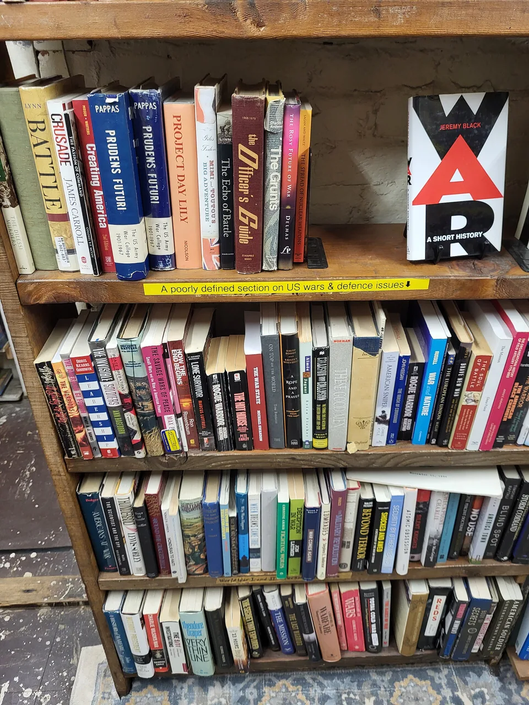
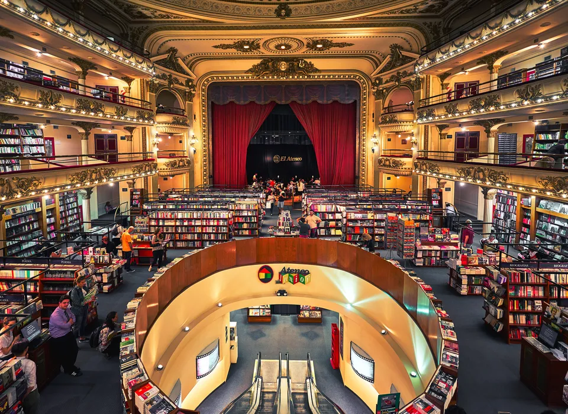
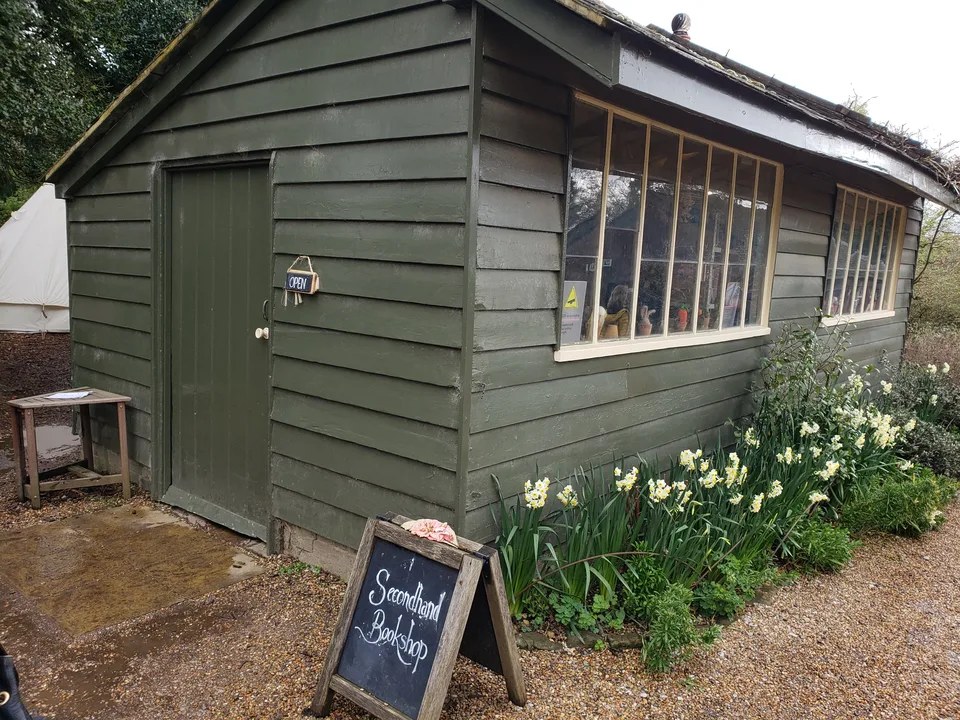
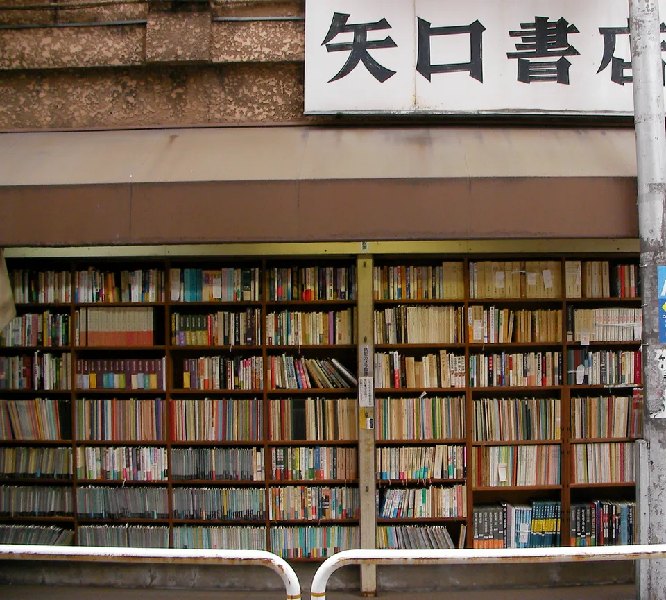

Every Bookstore Is a Small Country
Each one has its own borders, its own customs, and its own quiet language. A few notes on why they are so hard to walk past.

There is a moment, just inside the door of a bookstore, when the street lets go of you. The traffic drops to a murmur. The light changes. Somewhere a floorboard answers your weight, and the air smells faintly of paper and dust and whatever the person at the counter is drinking. You have crossed a border, and like every good border crossing it asks you to slow down.
I have come to think of bookstores as small countries. Each one is self-governing. Each has a population, a geography, a history written in the order of its shelves. And no two are quite alike, even when they sell the very same books.
The customs at the border
Every bookstore has rules that nobody writes down. In some you are expected to whisper; in others the radio is on and someone is arguing cheerfully about a novel near the till. Some invite you to sit on the floor in the poetry section. Some have a single armchair that everyone pretends is not the best seat in the house.
The truest documents of a bookstore are its handwritten cards: the little notes tucked under a paperback that say read this if you loved, or simply trust me. A bookseller's handwriting is a kind of passport stamp. It tells you that someone here has read this, and cared enough to say so in ink.

The grand and the small
Some bookstores are empires. They occupy old theaters and former banks; they have balconies and painted ceilings, and you climb a staircase to reach the history section as if ascending to an opera box. In places like these the books seem to have been given a stage, and you are both the audience and, briefly, part of the performance.
Others are principalities. A single room. A shed at the edge of a garden, with a chalkboard sign propped outside and a stack of paperbacks that changes with whatever the neighbors have finished reading. I love these just as fiercely. The smaller the country, the more personal its laws.

What the grand and the small share is permission. A bookstore is one of the last places where you can stay a long while, touch everything, buy nothing, and still be welcome. It is a public room disguised as a shop.
A map you make by wandering
Online, a book finds you because it resembles something you already liked. On a shelf, a book finds you because it happens to be standing next to the one you came for. That accident is the whole point. The wrong book beside the right one is how a reading life gets wider instead of deeper in the same narrow groove.
So I wander. I follow the spines the way you might follow a side street in an unfamiliar city, without a plan, trusting that the detour is where the story is. Fiction turns into travel turns into a shelf of old cookbooks, and somehow that sequence makes perfect sense.

Books that have lived before
Secondhand bookshops are countries with long memories. Their books arrive carrying traces of other readers: a name on the flyleaf, a penciled question mark in the margin, a ticket stub or a pressed leaf left to mark a page. You buy the book, but you also inherit a small, anonymous friendship with whoever held it first.
There are whole neighborhoods built on this idea, streets where the shops spill their shelves onto the pavement and the browsing begins before you are even through the door. To walk one is to understand that reading has always been a shared and continuing thing, passed hand to hand across years.
What we carry out
Almost no one leaves a bookstore with only the book they came for. You leave with a recommendation overheard at the till, a title scribbled on your palm, the weight of a paper bag that is heavier than you planned. You leave having been, for half an hour, somewhere else entirely.
That is why this journal is called what it is. A bookstore is where a journey can begin without a ticket. It is the smallest country I know, and the easiest to visit, and I hope you will come along to a few of them with me.
Which bookstore would you cross a border for?
Back to Books